Contour
Input/Output Layer를 정한 뒤 Threshold, ROI, Area 범위를 조정합니다. 최종 결과에서는 도형, 글자, 숫자 단위로 Box가 대상 위에 올라와야 합니다.
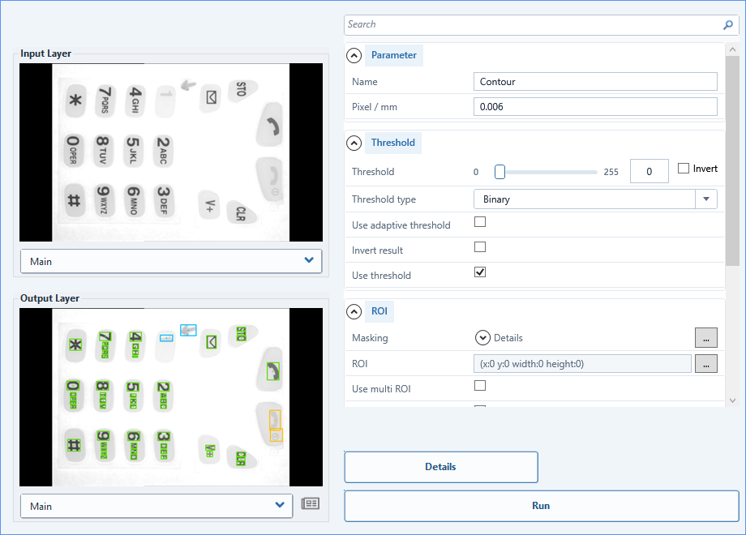
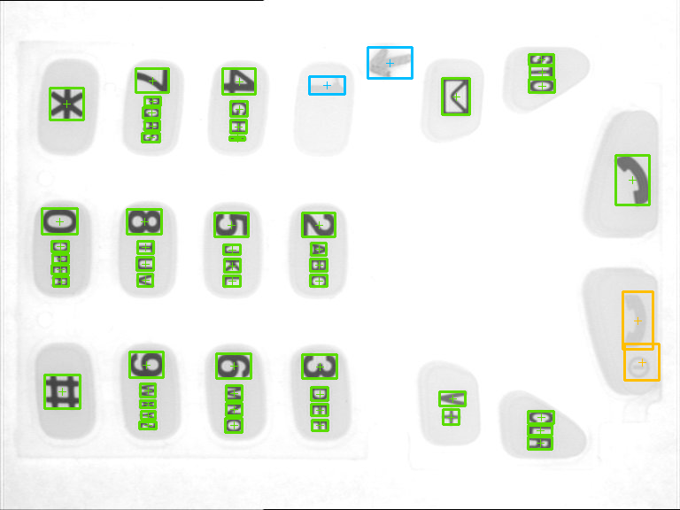
OpenCVSharp 기반 Rule-based Vision Workbench를 처음 사용하는 사용자를 위한 이미지 중심 튜토리얼입니다. 목표는 이미지를 불러오고, Tool을 조정하고, Pipeline Recipe를 만들고, 결과를 검증한 뒤 XML로 재사용하는 흐름을 이해하는 것입니다.
OPENVISIONLAB_TUTORIAL_PORTABLE.html을 사용하십시오.
OpenVisionLab은 단순히 이미지를 띄우는 프로그램이 아니라, 검사 조건을 만들고 검증하고 재사용하는 플랫폼입니다.
처음 사용하는 사용자는 모든 기능을 한 번에 보지 말고, 이미지 로드부터 Sample Catalog 검증까지 한 줄의 흐름으로 보는 것이 좋습니다.
Main은 기준 원본으로 유지하고, Tool 결과는 별도 Output Layer에 만듭니다. Preview는 확인이고 Publish는 Main Workspace 반영입니다.
Main 화면은 현재 이미지, 레이어, 검사 Step 상태, 로그를 한눈에 보는 작업 공간입니다.
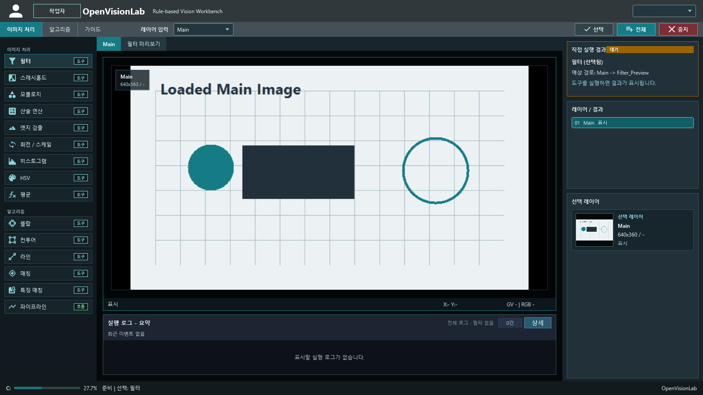
OpenVisionLab은 하나의 이미지만 보는 프로그램이 아닙니다. 원본, 전처리 결과, 최종 검출 결과를 각각 다른 레이어로 남겨 비교하는 것이 핵심 사용 방식입니다.
Main 레이어는 기준 이미지로 유지합니다. Tool 결과가 Main을 덮어쓰면 비교 기준이 사라집니다.Main에 원본 이미지를 불러옵니다.Text_Binary, Pin_Binary처럼 별도 Output Layer에 만듭니다.Text_Clean, Pin_Clean처럼 다음 레이어에 만듭니다.Text_Contour, Pin_Line, Part_Blob, Mark_Match처럼 목적이 드러나는 이름으로 만듭니다.| 확인할 질문 | 정상 기준 |
|---|---|
| Main이 덮어써졌는가? | 원본은 Main에 그대로 남고, 결과는 별도 레이어에 표시됩니다. |
| Threshold가 대상을 분리했는가? | 검출 대상과 배경이 명확히 분리됩니다. |
| Morphology가 대상을 망가뜨렸는가? | 노이즈는 줄고, 필요한 대상은 사라지거나 붙지 않습니다. |
| 최종 결과가 확인 가능한가? | Box, Line, Label, Score, Metric이 실제 대상 위에 표시됩니다. |
| Step 흐름이 이해되는가? | Pipeline에서 각 Step의 Input/Output pill이 의도대로 연결됩니다. |
Threshold는 가장 기본적인 전처리입니다. 이미지에서 밝기 기준으로 필요한 영역을 분리합니다.
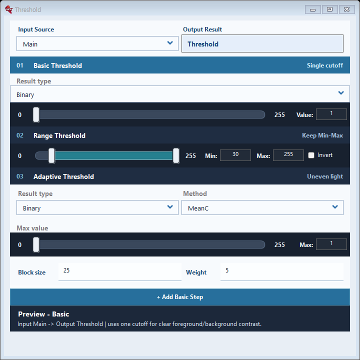
| 모드 | 언제 사용하는가 | 확인할 것 |
|---|---|---|
| Basic | 하나의 기준값으로 밝고 어두운 영역을 나눌 때 | Threshold 값, Result type |
| Range | 특정 밝기 범위만 남길 때 | Min, Max, Invert |
| Adaptive | 조명이 균일하지 않은 이미지에서 지역 밝기 기준으로 나눌 때 | Method, Block size, Weight |
Pipeline은 반복 가능한 검사 Recipe입니다. Step마다 Input과 Output이 명확해야 합니다.
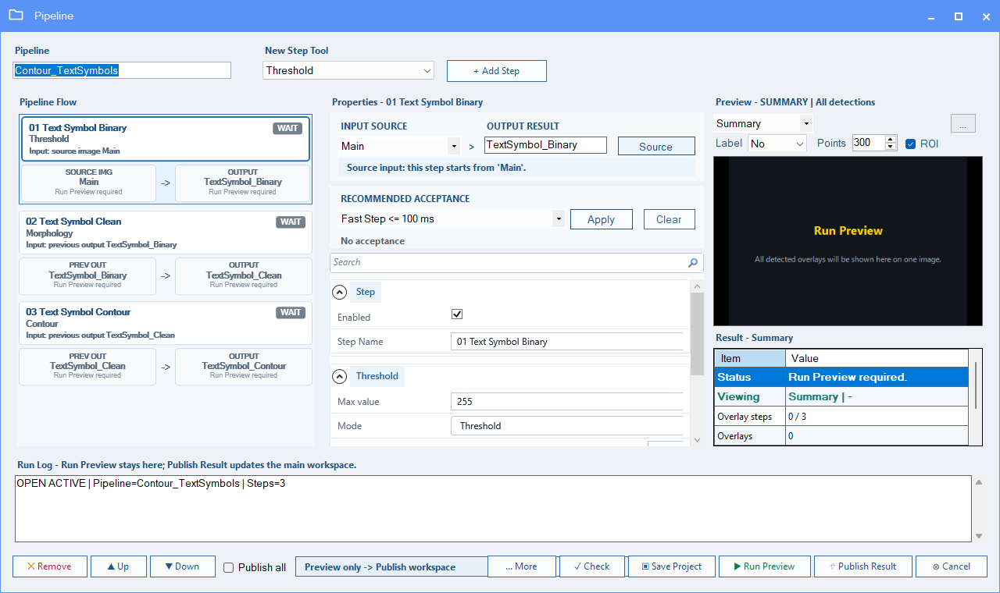
보통 Step은 이전 Step의 Output을 Input으로 읽습니다. 중간에 다시 Main을 읽으면 Branch입니다.
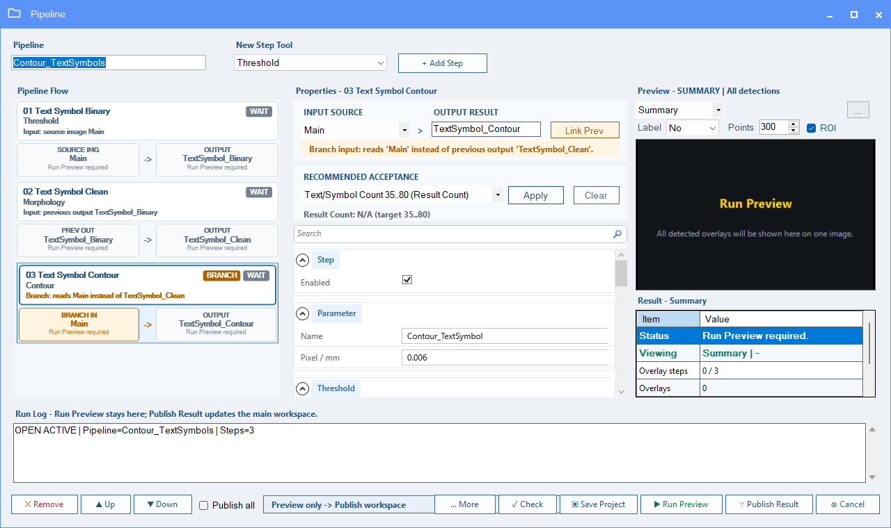
| Label | Meaning | User check |
|---|---|---|
SOURCE | The first step reads the original image. | Usually reads Main. |
PREV OUT | The step reads the previous step output. | Normal chained inspection flow. |
BRANCH IN | The step reads another layer instead of the previous output. | Keep it only when the branch is intentional. |
Main after Threshold/Morphology preprocessing, check the Step I/O panel. Use Link Prev when the step should inspect the processed image.
Sample Catalog는 학습과 검증의 기준입니다. 샘플 이미지, 추천 Pipeline, 기대 Metric이 함께 제공됩니다.
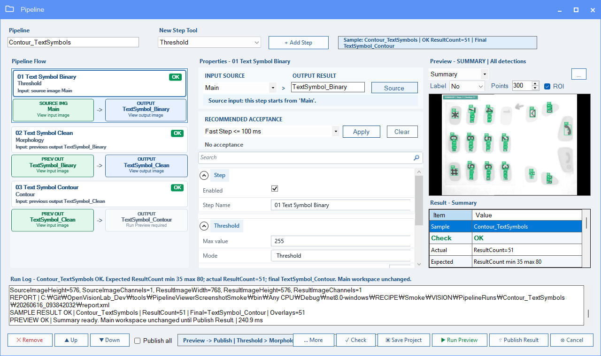
BoundsWidthMax, ResultCount, ScoreMax, or LineLengthMmMax.각 검사 폼은 파라미터를 찾는 공간입니다. 처음부터 Pipeline XML만 수정하는 것보다, 검사 폼에서 실제 이미지와 레이어를 보면서 티칭한 뒤 Pipeline Step으로 넘기는 흐름이 사용자에게 더 직관적입니다.
Main 레이어에 불러옵니다.Main, 두 번째 이후 검사는 이전 Output Layer를 선택합니다.| 항목 | 확인 기준 |
|---|---|
| Result image | 결과 이미지에 대상 위치가 명확히 표시됩니다. |
| Overlay | Box, Line, Cross, Label이 실제 대상 위에 올라갑니다. |
| Metric | ResultCount, Area, Score, LineLength, Angle, BoundsWidth가 기대 범위에 있습니다. |
| Log | ErrorCode가 없고 ResultStatus가 OK/Passed 흐름으로 남습니다. |
| Pipeline 재현 | 같은 설정을 Pipeline Run Preview에서도 실행했을 때 같은 결과가 나옵니다. |
아래 항목은 Tool별로 처음 테스트할 때 확인해야 하는 기준입니다.
| Tool | 추천 샘플 | 기본 테스트 흐름 | 확인할 Metric / Overlay |
|---|---|---|---|
| Contour | Contour_TextSymbols, DiePad_Surface |
Main -> Threshold -> Morphology -> Contour |
ResultCount, AreaMin/Max/Avg, Object Box Overlay |
| Blob | Rice_Particle_Blob |
Main -> Threshold -> Morphology -> Blob |
ResultCount, BoundsWidthAvg, AreaAvg |
| Pattern Matching | Contour_TemplateMatching |
Main -> Matching 또는 ROI 지정 후 Matching |
ScoreMax, ResultCount, Match Box Overlay |
| FeatureMatching | Feature_TemplateReview |
Main -> FeatureMatching |
ScoreMax, ResultCount, Homography Box Overlay, Detected Crop |
| EdgeDetection | Pins_LineGauge, SurfaceDefect_Edge |
Main -> Filter -> EdgeDetection |
Edge 이미지가 끊기지 않는지, 배경 노이즈가 과도하지 않은지 확인 |
| LineGauge | Pins_LineGauge |
Main -> Filter -> EdgeDetection -> LineGauge |
EdgeCount, LineLengthMax, LineLengthMmMax, LineAngleAvg, Fit Line Overlay |
| 거리 / 치수 측정 | BentPin_GoodShaft, BentPin_BadShaft, Pins_LineGauge |
Contour/Blob/LineGauge 결과에서 폭, 길이, 각도, Edge 간격을 Metric으로 비교 | BoundsWidthMax, BoundsWidthMmMax, BoundsHeightMmMax, LineLengthMmMax, LineAngleAvg, PIXELPERMM |
검사 폼은 파라미터를 찾는 곳이고, Sample/Pipeline Preview는 그 파라미터가 실제 검출로 이어지는지 확인하는 곳입니다. 아래 검사 폼 이미지는 좌측 Input/Output 이미지와 우측 Property를 함께 보여주는 전체 Form 기준입니다.
Input/Output Layer를 정한 뒤 Threshold, ROI, Area 범위를 조정합니다. 최종 결과에서는 도형, 글자, 숫자 단위로 Box가 대상 위에 올라와야 합니다.


Blob은 분리된 객체 수와 크기를 안정적으로 세는 용도입니다. Threshold/Morphology 결과가 붙거나 끊기면 Count와 Area 기준이 흔들립니다.
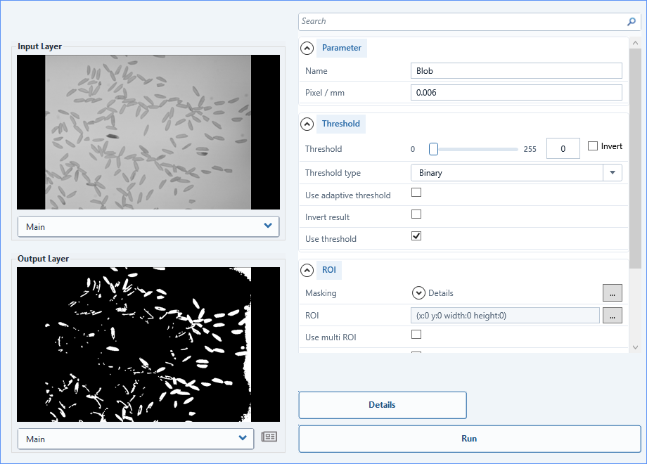
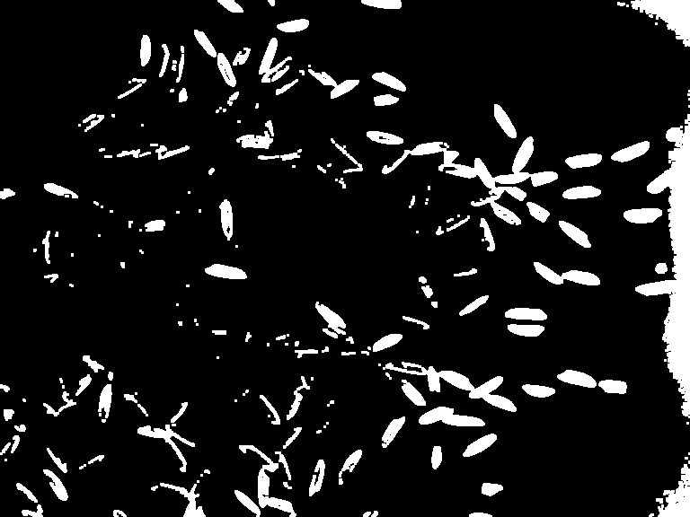
Matching은 기준 패턴, 검출된 crop, Overlay 위치를 함께 봐야 합니다. 기준 패턴은 찾으려는 형상만 타이트하게 crop해야 하며, 넓은 배경이나 주변 버튼이 포함되면 사용자가 오검출로 판단하기 쉽습니다.
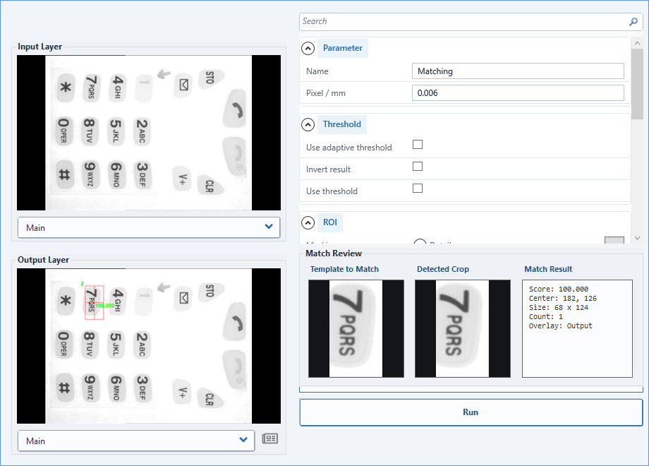
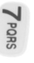

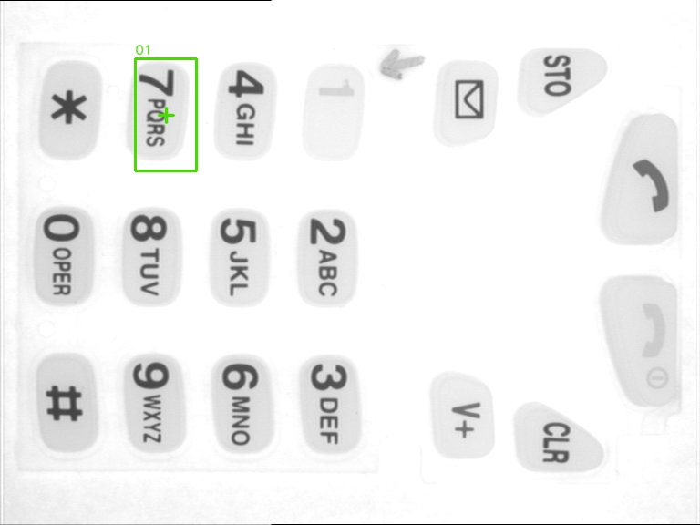
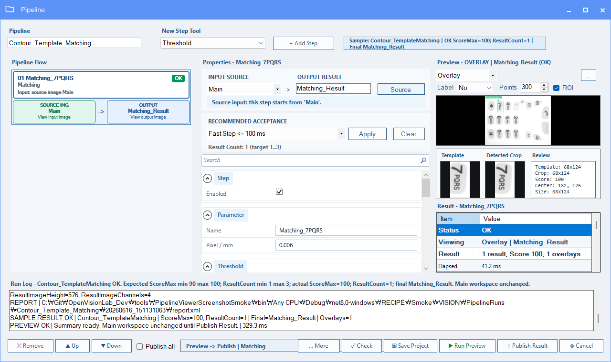
FeatureMatching은 단순 밝기 패턴보다 회전, 스케일, 원근 변화에 더 강한 특징점 기반 매칭입니다. Pattern Matching과 마찬가지로 Template, Detected Crop, Overlay 위치, Score를 함께 확인해야 합니다.
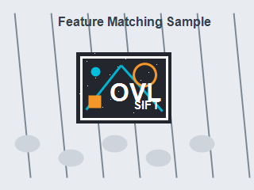
Feature_TemplateReview 입력 이미지입니다.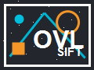
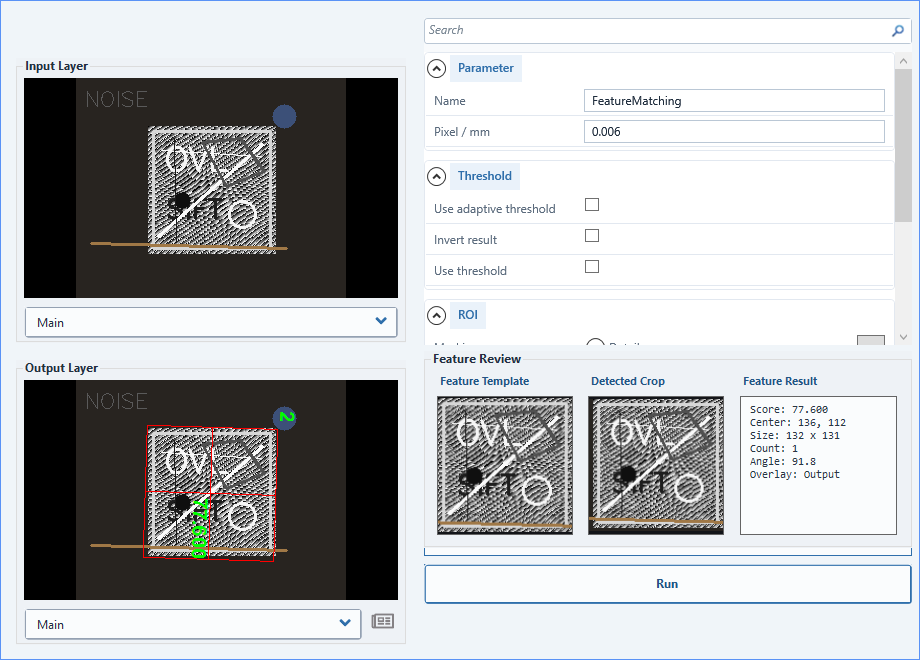
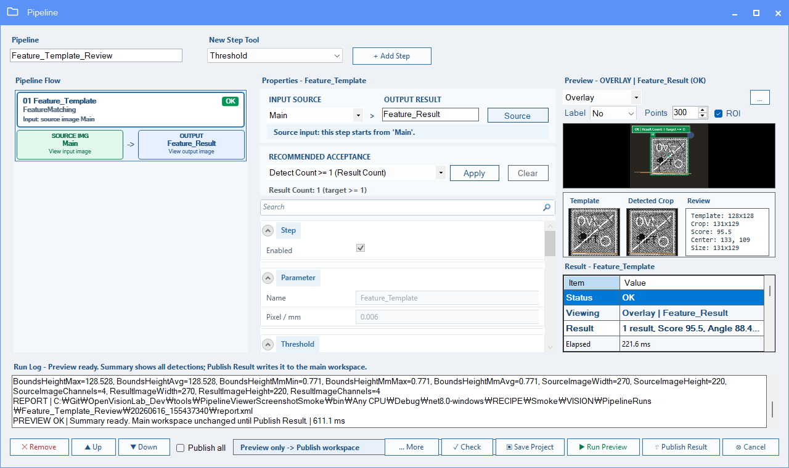
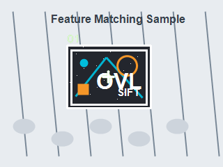
ScoreMax=100, ResultCount=1 기준으로 실제 검출 Overlay가 같은 패턴을 가리키는지 확인합니다.Feature_TemplateReview를 선택합니다.Feature_Result 레이어, Template, Detected Crop, Score, Overlay를 함께 확인합니다.EdgeDetection은 후속 LineGauge나 치수 측정의 입력이 되는 전처리 결과입니다. 끊긴 Edge와 배경 노이즈가 너무 많으면 다음 Step에서 NG가 납니다.
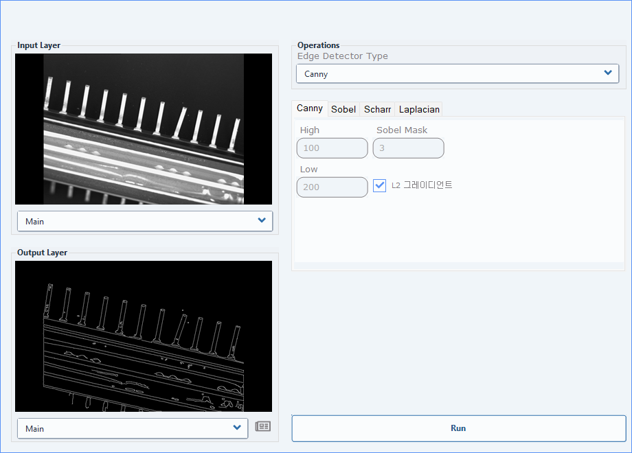
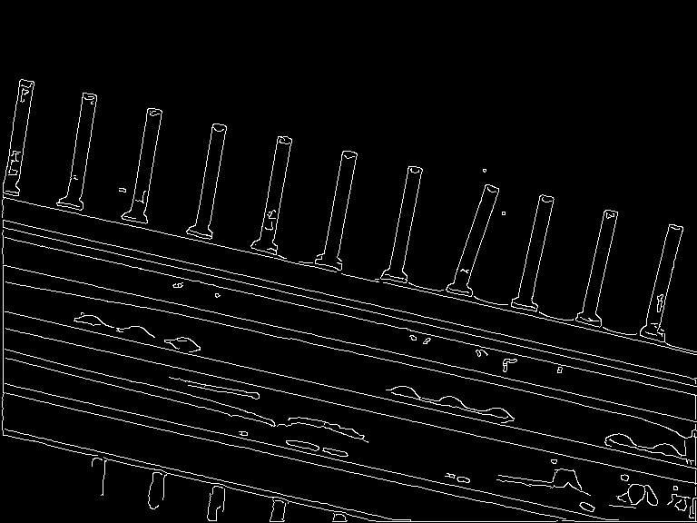
LineGauge는 Edge 후보를 기반으로 직선, 길이, 각도를 계산합니다. Pixel/mm 보정이 맞아야 mm 단위 Metric도 의미가 있습니다.
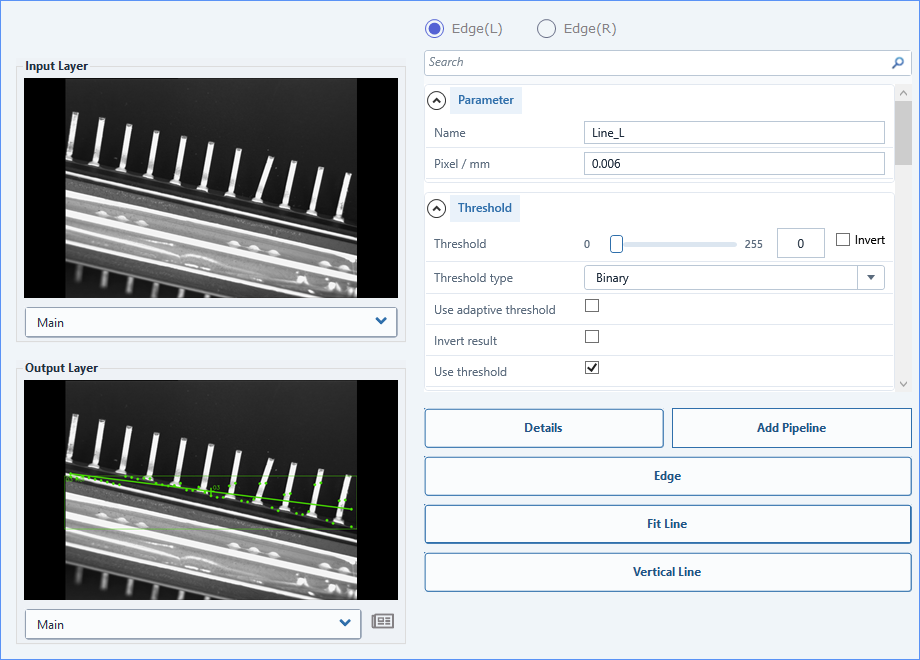
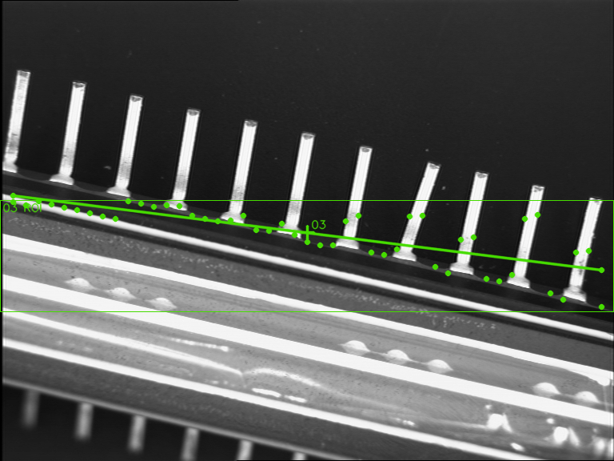
거리측정은 단순히 Edge 이미지를 보는 것으로 끝나지 않습니다. 측정 ROI 안에 여러 개의 수직 스캔 라인을 배치하고, 각 라인에서 Edge 후보를 찾은 뒤 Pixel/mm 보정값으로 실제 치수 Metric을 계산해야 합니다.
LineLengthMmMax, BoundsWidthMmMax, BoundsHeightMmMax, LineAngleAvg 같은 Metric으로 OK/NG 기준을 만듭니다.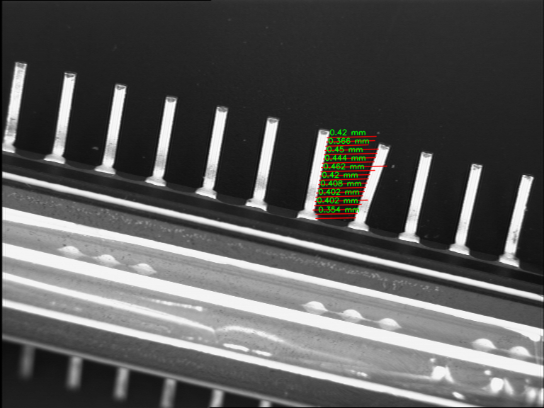
ResultCount와 평균 폭/면적 Metric이 기대 범위에 들어오는지 확인합니다.ScoreMax가 충분히 높은지 확인하고, 여러 후보가 나오면 Score와 위치를 함께 봅니다.BoundsWidthMmMax, BoundsHeightMmMax, LineLengthMmMax, 각도 Metric으로 OK/NG 기준을 만듭니다.AI Recipe는 최종 결정자가 아니라 Recipe Assistant입니다. LLM이 XML을 제안하면 OpenVisionLab이 실제 이미지로 검증합니다.
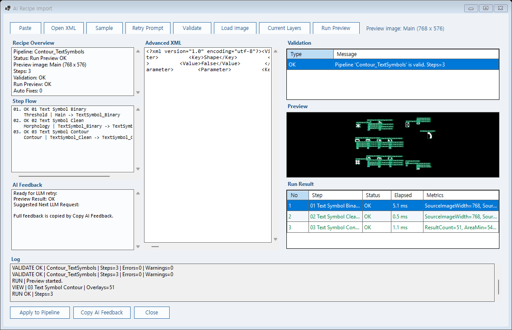
결과가 이상할 때는 아래 순서로 확인합니다.
| 상태 | 의미 | 다음 행동 |
|---|---|---|
| OK | 검사가 기대 기준을 만족했습니다. | Overlay와 Metric을 확인한 뒤 저장 또는 Publish합니다. |
| NG | 실행은 됐지만 기대 기준을 만족하지 못했습니다. | 첫 번째 NG Step의 파라미터와 Input Layer를 확인합니다. |
| Error | 입력, 파라미터, ROI, 파일, 예외 문제가 있습니다. | ErrorCode, DiagnosticHint, SuggestedFix를 확인합니다. |
| Needs Preview | 아직 결과가 계산되지 않았습니다. | Run Preview를 실행합니다. |